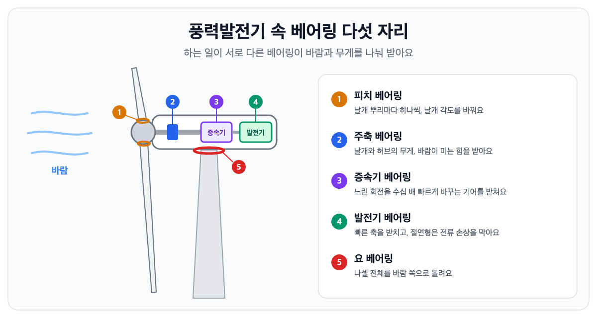

← 글 목록 · 베어링 이야기
풍력발전기의 거대한 날개를 받치는 베어링
풍력발전기 한 대에는 하는 일이 서로 다른 베어링이 다섯 자리에 들어가요. 날개 각도를 바꾸는 피치 베어링, 날개와 허브를 받치는 주축 베어링, 회전을 빠르게 바꾸는 증속기의 베어링, 전기를 만드는 발전기의 베어링, 몸체를 바람 쪽으로 돌리는 요 베어링이에요. 크고 천천히 돌지만, 바람이 쉬지 않고 바뀌어서 베어링에게는 아주 험한 일터예요.

거대한 바람개비가 아니라 회전 기계
바닷가나 산 위에 선 풍력발전기는 멀리서 보면 커다란 바람개비 같아요. 하지만 요즘 대형 발전기는 날개 하나가 100m를 넘기도 하고, 전체 높이가 200m에 가까운 것도 있어요. 꼭대기 몸체인 나셀 안에는 축과 기어, 발전기가 자동차보다 훨씬 크고 정교하게 들어 있어요.
날개는 천천히 돌지만 편하게 도는 게 아니에요. 바람의 세기와 방향은 몇 초 사이에도 바뀌고, 날개가 한 바퀴 도는 동안 높은 곳과 낮은 곳에서 받는 바람도 달라요. 그래서 안쪽 베어링에는 크기와 방향이 계속 바뀌는 힘이 들어와요.
날개를 붙잡고 도는 주축 베어링
날개와 허브는 무게가 수십 톤이 넘어요. 이 무게를 붙잡고 돌게 하는 것이 주축 베어링이에요. 바람이 날개를 미는 힘까지 함께 받아야 해서, 보통 자동조심 롤러 베어링이나 대형 테이퍼 롤러 베어링을 써요. 자동조심 롤러 베어링은 바람에 축이 살짝 휘어도 스스로 기울기를 맞추며 돌아서 이런 자리에 잘 맞아요.
느린 회전을 빠르게 — 증속기와 발전기
날개는 천천히 돌지만 발전기는 훨씬 빨리 돌아야 전기를 잘 만들어요. 그 사이에서 회전 속도를 수십 배로 높이는 장치가 증속기예요. 증속기 안에는 여러 단의 기어와 함께 롤러 베어링과 볼 베어링이 잔뜩 들어 있어요. 증속기는 풍력발전기에서 고장과 정비가 잦은 곳으로 꼽히고, 그 시작이 베어링인 경우가 많아요. 그래서 요즘은 증속기 없이 날개가 큰 발전기를 바로 돌리는 방식도 쓰여요.
발전기 축은 깊은 홈 볼 베어링 같은 베어링이 받쳐요. 발전기에서는 아주 작은 전류가 베어링을 지나가면서 궤도면을 상하게 하는 일이 있어요. 그래서 전기가 통하지 않게 만든 절연 베어링을 쓰는 경우가 늘고 있어요. 같은 문제는 인버터로 돌리는 공장 모터에서도 생겨요.
바람을 따라 도는 요 베어링, 날개 각도를 바꾸는 피치 베어링
바람은 늘 같은 쪽에서 불지 않아요. 바람 방향이 바뀌면 꼭대기의 나셀 전체가 천천히 돌아서 날개가 바람을 정면으로 받게 해요. 나셀과 탑 사이에서 이 회전을 받치는 것이 요 베어링이에요.
피치 베어링은 날개 뿌리마다 하나씩 들어가서, 날개가 세 개면 세 개예요. 바람이 약할 때는 바람을 더 받도록, 너무 셀 때는 바람을 흘려보내도록 날개 각도를 바꿔서 발전기를 지켜요.
두 베어링은 지름이 몇 미터나 되는 선회륜 베어링으로 만드는 경우가 많아요. 링에 기어 이를 직접 깎아 두고, 모터가 작은 기어(피니언)를 돌리면 큰 링이 따라 돌아요. 베어링 하나가 무게를 받치는 일과 회전을 전하는 일을 함께 하는 거예요. 볼이 궤도와 네 점에서 닿을 수 있게 만든 '4점 접촉 볼' 방식이 많이 쓰여요.
바다 위라면 더 어려워요 — 해상풍력
바다 위의 풍력발전기는 짠 바닷바람과 습기, 파도에 늘 노출돼요. 고장이 나면 배와 큰 크레인을 불러야 해서 고치는 데 시간과 돈이 훨씬 많이 들어요. 그래서 해상풍력 베어링은 녹에 강하고 오래 버티게 만들고, 윤활 상태와 진동을 멀리서 지켜보는 기술도 빠르게 붙고 있어요. 베어링을 얼마나 믿을 수 있느냐가 곧 발전기의 경제성이 되는 셈이에요.
더 알아보기
- 통나무에서 볼 베어링까지 — 베어링의 역사
- 로봇 관절의 비밀 — 크로스롤러 베어링 (준비 중)
- 모터 베어링이 자꾸 망가져요 — 인버터와 전식 (준비 중)
- 이 글은 준비 중인 교양책의 두 꼭지(3장 발전소와 풍력기계, 2장 선회륜 베어링)를 줄인 것이에요. 책이 나오면 이곳에서 알려 드릴게요.
설비에 맞는 베어링을 찾으세요?
번호나 사진, 쓰는 곳을 보내 주시면 맞는 베어링과 호환품을 함께 찾아 드려요.
이 베어링 찾으세요? 번호나 사진만 보내 주세요.
견적 문의하기